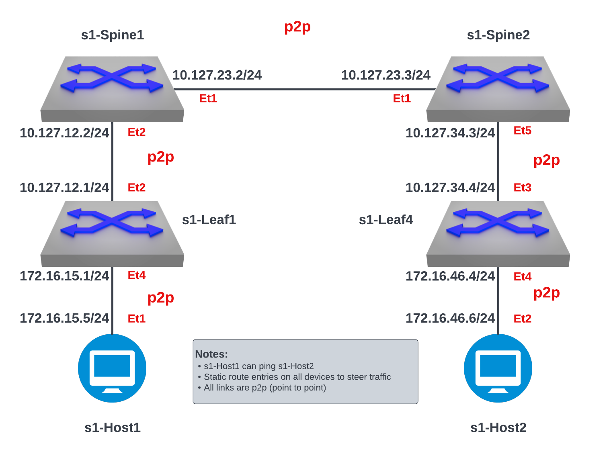

Media Intro to IP Lab

:::: note ::: title Note :::
An IP address serves two principal functions. It identifies the host, or more specifically its network interface, and it provides the location of the host in the network, and thus the capability of establishing a path to that host. Its role has been characterized as follows: \"A name indicates what we seek. An address indicates where it is. A route indicates how to get there.\" ::::
:::: note ::: title Note :::
This lab has been limited to the following devices s1-Leaf 1, s1-Leaf 4, s1-Spine 1, s1-Spine 2, s1-Host 1 and s1-Host 2. Additional devices on this topology are out of scope for this lab. ::::
- Log into the LabAccess jumpserver:
- Type
labsat the Main Menu prompt. This will bring up additional lab menu selections. - Type
media-labsat this prompt to open the media lab section. - Type
media-introat this prompt and wait for the process to run. - The script will configure the topology with the exception of s1-Leaf 4. The main task is to configure this device so there is connectivity between the two hosts
- Type
- Connect to s1-Leaf 4 from the menu:
- Connect to
s1-Leaf 4by selecting option10from theDevice SSHmenu (Typesshat the prompt). Once in the switch we are in the Privileged EXEC mode, denoted by the # preceding the device name. This is similar to a admin user, in this mode can configure and view information on the switch. To configure devices we will need to go into the global configuration mode by typing configure at the prompt, this will bring you into Privileged EXEC (enable) mode. As you do the labs you will see this configure command being used to ensure that you are in the config mode. One prompt that you may come across is the > this denotes that you are in EXEC mode, in this mode you can do basic tests and view system information. EXEC mode is the default mode for all switches.
- Connect to
- Configure the proper ip address on the interfaces along with the appropriate static routes to ensure there is end-to-end connectivity for the two end hosts to reach each other. All interfaces in this lab are designed as point-to-point connections
On s1-Leaf 4 assign the appropriate ip address and ensure the adjacent devices can be reached
Example:
:::: note ::: title Note :::
It is worth mentioning by default all interfaces on an Arista switch is set to be a switchport (Layer 2 interface). We need to allow it to be a routed interface and thus
no switchportis added (turns into Layer 3 interface). Once the IP address has been added to the appropriate interface, ensure reachability to the adjacent device by leveraging thepingcommand on s1-Leaf 4 ::::
Test Connect to s1-Spine2 and to s1-Host2
:
text ping 10.127.34.3 ping 172.16.46.6Example:
s1-leaf4# ping 10.127.34.3 PING 10.127.34.3 (10.127.34.3) 72(100) bytes of data. 80 bytes from 10.127.34.3: icmp_seq=1 ttl=64 time=17.0 ms 80 bytes from 10.127.34.3: icmp_seq=2 ttl=64 time=18.8 ms 80 bytes from 10.127.34.3: icmp_seq=3 ttl=64 time=14.9 ms 80 bytes from 10.127.34.3: icmp_seq=4 ttl=64 time=12.6 ms --- 10.127.34.3 ping statistics --- 5 packets transmitted, 4 received, 20% packet loss, time 62ms rtt min/avg/max/mdev = 12.605/15.868/18.844/2.332 ms, pipe 2, ipg/ewma 15.602/16.435 ms s1-leaf4# ping 172.16.46.6 PING 172.16.46.6 (172.16.46.6) 72(100) bytes of data. 80 bytes from 172.16.46.6: icmp_seq=1 ttl=64 time=38.4 ms 80 bytes from 172.16.46.6: icmp_seq=2 ttl=64 time=32.1 ms 80 bytes from 172.16.46.6: icmp_seq=3 ttl=64 time=28.0 ms 80 bytes from 172.16.46.6: icmp_seq=4 ttl=64 time=31.6 ms 80 bytes from 172.16.46.6: icmp_seq=5 ttl=64 time=12.7 ms --- 172.16.46.6 ping statistics --- 5 packets transmitted, 5 received, 0% packet loss, time 68ms rtt min/avg/max/mdev = 12.797/28.603/38.419/8.584 ms, pipe 4, ipg/ewma 17.163/32.954 msAt this point if the adjacent devices can be reached, you have configured the IP address correctly
Once the address has been assigned to the appropriate interfaces, we can enable the routing as well as add the appropriate static routes on s1-Leaf 4 to allow reachability between the two host end-points.
Example:
:::: note ::: title Note :::
We added the entire prefix for the static route but we could have also put the specific host address. Normally your internal security policies will dictate which approach to take ::::
- Validate end-to-end connectivity from the hosts once IP addresses
and static routes have been configured from the previous steps
-
Log into s1-Host 2 and verify there is reachability to s1-Host 1
Example:
s1-host2# ping 172.16.15.5 PING 172.16.15.5 (172.16.15.5) 72(100) bytes of data. 80 bytes from 172.16.15.5: icmp_seq=1 ttl=60 time=307 ms 80 bytes from 172.16.15.5: icmp_seq=2 ttl=60 time=300 ms 80 bytes from 172.16.15.5: icmp_seq=3 ttl=60 time=296 ms 80 bytes from 172.16.15.5: icmp_seq=4 ttl=60 time=293 ms 80 bytes from 172.16.15.5: icmp_seq=5 ttl=60 time=289 ms --- 172.16.15.5 ping statistics --- 5 packets transmitted, 5 received, 0% packet loss, time 43ms rtt min/avg/max/mdev = 289.129/297.583/307.932/6.497 ms, pipe 5, ipg/ewma 10.984/302.312 msIf all the IP address and routing settings have been completed correctly, then you should have reachability
-
::: admonition Test your knowledge:
When s1-Leaf 4 receives the incoming icmp packet from s1-Host 2, what would the process be for the switch to determine the path for the packet to be fowarded? :::
LAB COMPLETE!
::: admonition Helpful Commands:
During the lab you can use the different commands to verify connectivity and behaviour for validation and troubleshooting purposes:
- show ip route
- show ip arp
- show ip interface brief
- show interface status :::